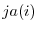

Next: psb_spasb Sparse
Up: Data management routines
Previous: psb_spall Allocates
Contents
call psb_spins(nz, ia, ja, val, a, desc_a, info [,local])
- Type:
- Asynchronous.
- On Entry
-
- nz
- the number of elements to be inserted.
Scope:local.
Type:required.
Intent: in.
Specified as: an integer scalar.
- ia
- the row indices of the elements to be inserted.
Scope:local.
Type:required.
Intent: in.
Specified as: an integer array of size  .
.
- ja
- the column indices of the elements to be inserted.
Scope:local.
Type:required.
Intent: in.
Specified as: an integer array of size .
- val
- the elements to be inserted.
Scope:local.
Type:required.
Intent: in.
Specified as: an array of size . Must be of the same type and kind
of the coefficients of the sparse matrix .
- desc_a
- The communication descriptor.
Scope: local.
Type: required.
Intent: inout.
Specified as: a variable of type descdatapsb_desc_type.
- local
- Whether the entries in the indices vectors
ia,
ja are already in local numbering.
Scope:local.
Type:optional.
Specified as: a logical value; default: .false..
- On Return
-
- a
- the matrix into which elements will be inserted.
Scope:local
Type:required
Intent: inout.
Specified as: a structured data of type spdatapsb_Tspmat_type.
- desc_a
- The communication descriptor.
Scope: local.
Type: required.
Intent: inout.
Specified as: a variable of type descdatapsb_desc_type.
- info
- Error code.
Scope: local
Type: required
Intent: out.
An integer value; 0 means no error has been detected.
Notes
- On entry to this routine the descriptor may be in either the
build or assembled state.
- On entry to this routine the sparse matrix may be in either the
build or update state.
- If the descriptor is in the build state, then the sparse matrix
must also be in the build state; the action of the routine is to
(implicitly) call
psb_cdins to add entries to the sparsity
pattern; each sparse matrix entry implicitly defines a graph edge,
that is passed to the descriptor routine for the appropriate
processing;
- The coefficients to be inserted are represented by the ordered
triples
 , for
, for  ; these triples
should belong to the current process, i.e.
; these triples
should belong to the current process, i.e.  should be one of
the local indices, but are otherwise arbitrary;
should be one of
the local indices, but are otherwise arbitrary;
- There is no
requirement that a given row must be passed in its entirety to a
single call to this routine: the buildup of a row may be split into
as many calls as desired;
- Coefficients from different rows may also be mixed up freely
in a single call, according to the application needs;
- Any coefficients from matrix rows not owned by the calling
process are silently ignored;
- If the descriptor is in the assembled state, then any entries in
the sparse matrix that would generate additional communication
requirements are ignored;
- If the matrix is in the update state, any entries in positions
that were not present in the original matrix are ignored.
Next: psb_spasb Sparse
Up: Data management routines
Previous: psb_spall Allocates
Contents